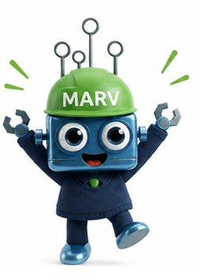

35 years of surface repair
The Magicman Client Experience
Follow a repair from the first online search through to a completed, quality-assured job. It takes around ten to fifteen minutes, and MARV will guide you the whole way.

Hi, I am MARV. Let me walk you through the Magicman repair journey.